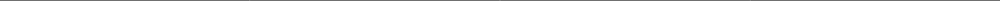
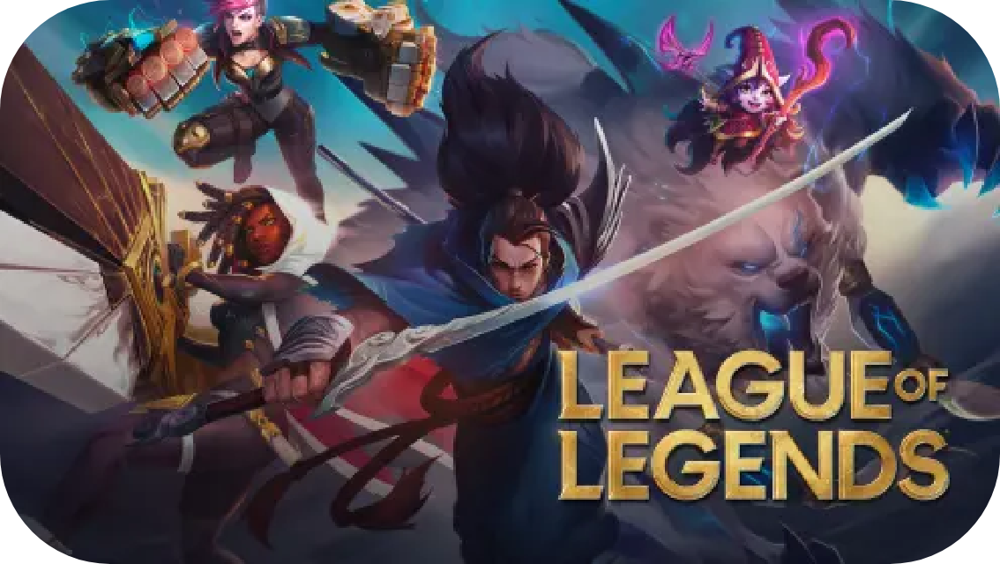
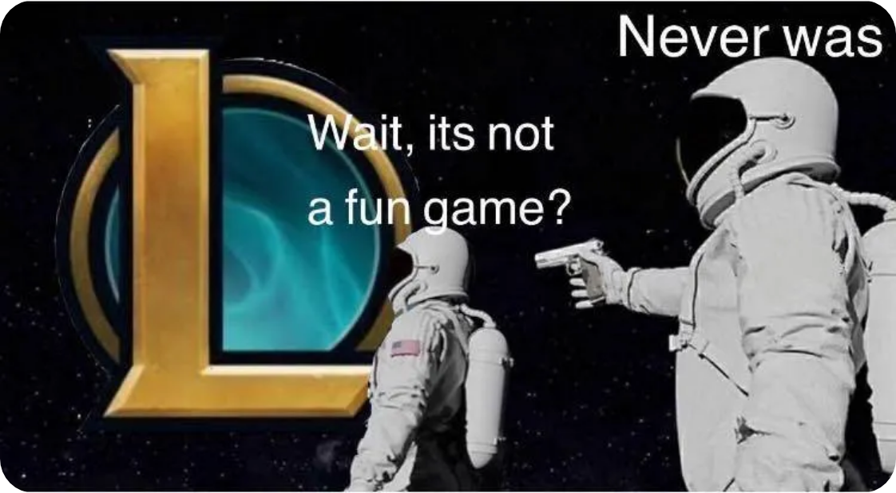

Descripción
League of Legends (también conocido por sus siglas LoL) es un videojuego multijugador de arena de batalla en línea desarrollado y publicado por Riot Games. Inspirándose en Defense of the Ancients, un mapa personalizado para Warcraft III, los fundadores de Riot Games buscaron desarrollar un juego independiente del mismo género. Desde su lanzamiento en octubre de 2009, LoL ha sido un juego gratuito y se monetiza a través de la compra de elementos para la personalización de personajes y otros accesorios. El juego está disponible para Microsoft Windows y macOS.
Caracteristicas
- Género
- Multijugador de arena de batalla en línea
- Desarrollador
- Riot Games
- Lanzamiento
- 26 de octubre de 2009
- Modos de juego
- Multijugador
- Mi rating
